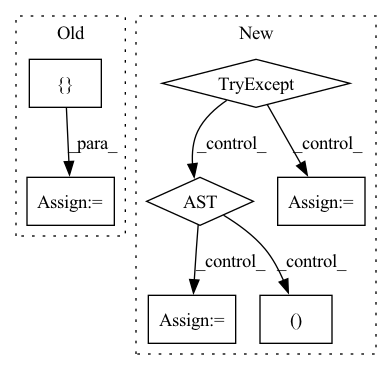

Pattern ID :9581
Before Change
:param bn_op: BN op.
:return: (mean, variance, gamma, beta)
bn_stats_and_params = []
bn_stats_and_params.extend(_get_bn_stats_var(session, bn_op))
bn_stats_and_params.extend(_get_bn_params_var(session, bn_op))
assert len(bn_stats_and_params) == 4, "Unable to get the BN stats and params for given BN op: %s" % bn_op.name
with session.graph.as_default():
mean, var, gamma, beta = session.run(bn_stats_and_params)
return mean, var, gamma, beta
After Change
:param bn_conn_graph_op: BN op.
:return: (mean, variance, gamma, beta)
try:
beta, gamma, mean, var = _get_info_using_global_var(session, bn_conn_graph_op)
except AssertionError:
beta, gamma, mean, var = _get_info_using_read_variable_op_tensor(session, bn_conn_graph_op)
return mean, var, gamma, beta
In pattern: SUPERPATTERN
Frequency: 6
Non-data size: 7
Instances Fragment ID: 34230158
Project Name: quic/aimet
Commit Name: 521fa67c4ae754416c7ba0a79641df6afd4f6a1e
Time: 2023-04-17
Author: quic_hitameht@quicinc.com
File Name: TrainingExtensions/tensorflow/src/python/aimet_tensorflow/utils/op/bn_mutable.py
M Class Name: AnonimousClass
N Class Name: AnonimousClass
M Method Name: _get_bn_stats_and_params(2)
N Method Name: _get_bn_stats_and_params(2)
M Parent Class:
N Parent Class:
M File Name: TrainingExtensions/tensorflow/src/python/aimet_tensorflow/utils/op/bn_mutable.py
N File Name: TrainingExtensions/tensorflow/src/python/aimet_tensorflow/utils/op/bn_mutable.py
M Start Line: 155
M End Line: 161
N Start Line: 169
N End Line: 173
Before Change
pos.detach().cpu().numpy(),
cutoff,
)
edge_index = torch.tensor(np.stack([ idx_i, idx_jAfter Change
if not bidirectional:
raise NotImplementedError()
try:
edge_index, S = calc_neighbor_by_pymatgen(pos, cell, pbc, cutoff)
except Exception:
// This is slower.
edge_index, S = calc_neighbor_by_ase(pos, cell, pbc, cutoff)
return edge_index, S
Fragment ID: 34230143
Project Name: pfnet-research/torch-dftd
Commit Name: 010c36b6d4aaceb3d614318121e910b9134663a4
Time: 2021-07-04
Author: acc1ssnn9terias@gmail.com
File Name: torch_dftd/functions/edge_extraction.py
M Class Name: AnonimousClass
N Class Name: AnonimousClass
M Method Name: calc_edge_index(5)
N Method Name: calc_edge_index(5)
M Parent Class:
N Parent Class:
M File Name: torch_dftd/functions/edge_extraction.py
N File Name: torch_dftd/functions/edge_extraction.py
M Start Line: 49
M End Line: 58
N Start Line: 113
N End Line: 119
Before Change
r = 1 // return
if len(weights) > 0 and not os.path.isfile(weights):
d = { "yolov3-spp.pt": "1mM67oNw4fZoIOL1c8M3hHmj66d8e-ni_", // yolov3-spp.yaml
"yolov5s.pt": "1R5T6rIyy3lLwgFXNms8whc-387H0tMQO", // yolov5s.yaml
"yolov5m.pt": "1vobuEExpWQVpXExsJ2w-Mbf3HJjWkQJr", // yolov5m.yaml
"yolov5l.pt": "1hrlqD1Wdei7UT4OgT785BEk1JwnSvNEV", // yolov5l.yaml
"yolov5x.pt": "1mM8aZJlWTxOg7BZJvNUMrTnA2AbeCVzS", // yolov5x.yaml
}
file = Path(weights).name
if file in d:
r = gdrive_download(id=d[file], name=weights)After Change
// if r == 0 and os.path.exists(weights) and os.path.getsize(weights) > 1E6: // check
// return
try: // GitHub
url = "https://github.com/ultralytics/yolov5/releases/download/v2.0/" + file
print("Downloading %s to %s..." % (url, weights))
if platform.system() == "Darwin": // avoid MacOS python requests certificate error
r = os.system("curl -L %s -o %s" % (url, weights))
else:
torch.hub.download_url_to_file(url, weights)
assert os.path.exists(weights) and os.path.getsize(weights) > 1E6 // check
except Exception as e: // GCP
print("Download error: %s" % e)
url = "https://storage.googleapis.com/ultralytics/yolov5/ckpt/" + file
print("Downloading %s to %s..." % (url, weights ))
r = os.system("curl -L %s -o %s" % (url, weights)) // torch.hub.download_url_to_file(url, weights)
finally:
if not (os.path.exists(weights) and os.path.getsize(weights) > 1E6): // check
os.remove(weights) if os.path.exists(weights) else None // remove partial downloads Fragment ID: 34230172
Project Name: wmcnally/kapao
Commit Name: 1f92422e206405972e7e9766b47dcf044c9a784e
Time: 2020-08-11
Author: marcpaquet2@hotmail.com
File Name: utils/google_utils.py
M Class Name: AnonimousClass
N Class Name: AnonimousClass
M Method Name: attempt_download(1)
N Method Name: attempt_download(1)
M Parent Class:
N Parent Class:
M File Name: utils/google_utils.py
N File Name: utils/google_utils.py
M Start Line: 13
M End Line: 39
N Start Line: 14
N End Line: 50